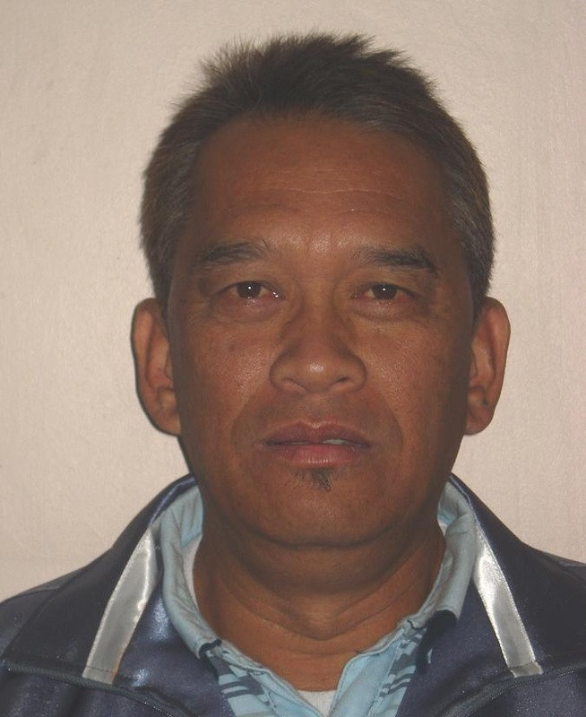
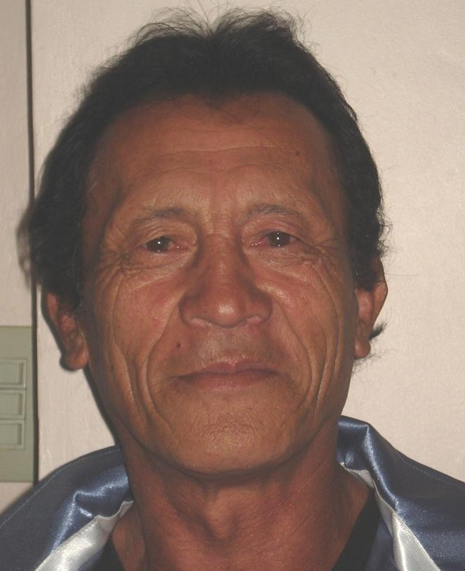
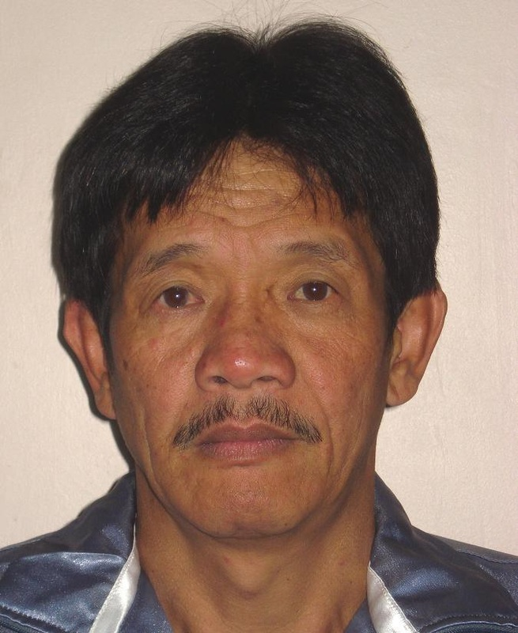

Local Government Unit LGU of New Lucban, Baguio City,Benguet, Philippines
Elected officials of New Lucban
Punong Barangay : Caluza, John Banaña
 .
.
Barangay Treasurer: Myrna B. Garcia
Barangay Secretary: Madeleine Y.
Barangay Kagawad : Boholst, Jojo Matuguina
Barangay Kagawad : Fronda, Sixto Estoque
Barangay Kagawad : San Juan, Delia Lalata
Barangay Kagawad : Villalon, Ruben Blacer
Barangay Kagawad : Tagudar, Maria Calderon

Barangay Kagawad : Teliaken, Aldrin Aguia
Barangay Kagawad : Padtoc, Jerome Lawagan
Barangay BHW : Benia A.Doloy
Barangay Day Care Worker: Octavia D.Polinney
Barangay Street Sweeper : Marina Anchong